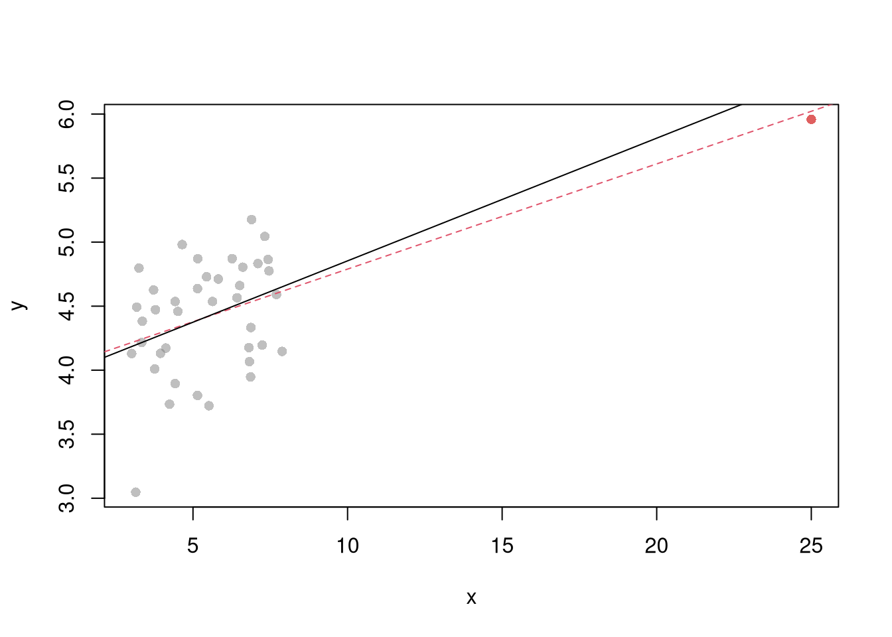
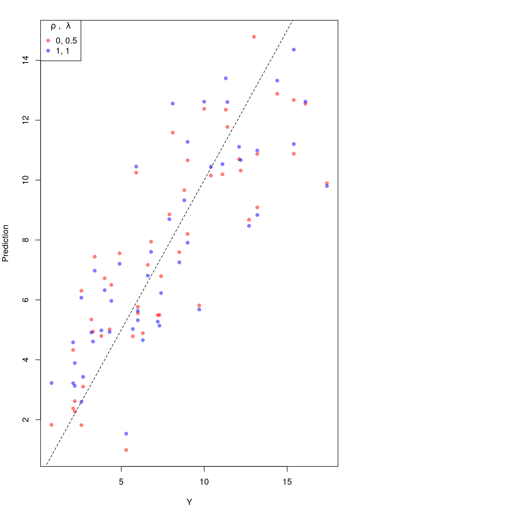

8 Multivariate Data
Given a dataset, you can summarize it using the previous tools.
## Murder Assault UrbanPop Rape
## Alabama 13.2 236 58 21.2
## Alaska 10.0 263 48 44.5
## Arizona 8.1 294 80 31.0
## Arkansas 8.8 190 50 19.5
## California 9.0 276 91 40.6
## Colorado 7.9 204 78 38.7library(psych)
pairs.panels( USArrests[,c('Murder','Assault','UrbanPop')],
hist.col=grey(0,.25), breaks=30, density=F, ## Diagonal
ellipses=F, rug=F, smoother=F, pch=16, col=grey(0,.5) ## Lower Triangle
)
8.1 Multiple Linear Regression
Model and objective \[ y_i=\beta_0+\beta_1x_{i1}+\beta_2x_{i2}+\ldots+\beta_kx_{ik}+\epsilon_i = X_{i}\beta +\epsilon_i \\ min_{\beta} \sum_{i=1}^{n} (\epsilon_i)^2 \] Can also be written in matrix form \[ y=\textbf{X}\beta+\epsilon\\ min_{\beta} (\epsilon' \epsilon) \]
Point Estimates \[ \hat{\beta}=(\textbf{X}'\textbf{X})^{-1}\textbf{X}'y \]
## Manually Compute
Y <- USArrests[,'Murder']
X <- USArrests[,c('Assault','UrbanPop')]
X <- as.matrix(cbind(1,X))
XtXi <- solve(t(X)%*%X)
Bhat <- XtXi %*% (t(X)%*%Y)
c(Bhat)## [1] 3.20715340 0.04390995 -0.04451047## (Intercept) Assault UrbanPop
## 3.20715340 0.04390995 -0.04451047To measure the ``Goodness of fit’’ of the model, we can again plot our predictions
 and compute sums of squared errors. Adding random data may sometimes improve the fit, however, so we adjust the \(R^2\) by the number of covariates \(K\).
\[
R^2 = \frac{ESS}{TSS}=1-\frac{RSS}{TSS}\\
R^2_{\text{adj.}} = 1-\frac{n-1}{n-K}(1-R^2)
\]
and compute sums of squared errors. Adding random data may sometimes improve the fit, however, so we adjust the \(R^2\) by the number of covariates \(K\).
\[
R^2 = \frac{ESS}{TSS}=1-\frac{RSS}{TSS}\\
R^2_{\text{adj.}} = 1-\frac{n-1}{n-K}(1-R^2)
\]
ksims <- 1:30
for(k in ksims){
USArrests[,paste0('R',k)] <- runif(nrow(USArrests),0,20)
}
reg_sim <- lapply(ksims, function(k){
rvars <- c('Assault','UrbanPop', paste0('R',1:k))
rvars2 <- paste0(rvars, collapse='+')
reg_k <- lm( paste0('Murder~',rvars2), data=USArrests)
})
R2_sim <- sapply(reg_sim, function(reg_k){ summary(reg_k)$r.squared })
R2adj_sim <- sapply(reg_sim, function(reg_k){ summary(reg_k)$adj.r.squared })
plot.new()
plot.window(xlim=c(0,30), ylim=c(0,1))
points(ksims, R2_sim)
points(ksims, R2adj_sim, pch=16)
axis(1)
axis(2)
mtext(expression(R^2),2, line=3)
mtext('Additional Random Covariates', 1, line=3)
legend('topleft', horiz=T,
legend=c('Undjusted', 'Adjusted'), pch=c(1,16))
8.2 Variability and Hypothesis Tests
To estimate the variability of our estimates, we can use the same data-driven methods introduced in the last section.
## Bootstrap SE's
boots <- 1:399
boot_regs <- lapply(boots, function(b){
b_id <- sample( nrow(USArrests), replace=T)
xy_b <- USArrests[b_id,]
reg_b <- lm(Murder~Assault+UrbanPop, dat=xy_b)
})
boot_coefs <- sapply(boot_regs, coef)
boot_mean <- apply(boot_coefs,1, mean)
boot_se <- apply(boot_coefs,1, sd)As before, we can conduct independent hypothesis tests using t-values. We can also conduct joint tests, such as whether two coefficients are equal, by looking at the their joint distribution.
boot_coef_df <- as.data.frame(cbind(ID=boots, t(boot_coefs)))
fig <- plotly::plot_ly(boot_coef_df,
type = 'scatter', mode = 'markers',
x = ~UrbanPop, y = ~Assault,
text = ~paste('<b> boot: ', ID, '</b>'),
hoverinfo='text',
showlegend=F,
marker=list( color='rgba(0, 0, 0, 0.5)'))
fig <- plotly::layout(fig,
showlegend=F,
title='Joint Distribution of Coefficients',
xaxis = list(title='UrbanPop Coefficient'),
yaxis = list(title='Homicide Coefficient'))
figWe can also use an \(F\) test for any \(q\) hypotheses; \[ \widehat{F}_{q} = \frac{(ESS_{restricted}-ESS_{unrestricted})/q}{ESS_{unrestricted}/(n-q)}=\frac{R^2}{(1-R^2)}\frac{n-q}{q}, \] which can also be written in terms of adjusted \(R^2\). For some intuition on hypothesis testing, we examine how the \(R^2\) statistic varies with bootstrap samples. Specifically, compute a null \(R^2\) distribution by randomly reshuffling the outcomes and compare it to the observed \(R^2\).
## Bootstrap NULL
boots <- 1:399
boot_regs0 <- lapply(boots, function(b){
xy_b <- USArrests
b_id <- sample( nrow(USArrests), replace=T)
xy_b$Murder <- xy_b$Murder[b_id]
reg_b <- lm(Murder~Assault+UrbanPop, dat=xy_b)
})
boot_coefs0 <- sapply(boot_regs0, function(reg_k){
coef(reg_k) })
R2_sim0 <- sapply(boot_regs0, function(reg_k){
summary(reg_k)$r.squared })
R2adj_sim0 <- sapply(boot_regs0, function(reg_k){
summary(reg_k)$adj.r.squared })
hist(R2adj_sim0, xlim=c(0,1), breaks=25,
main='', xlab=expression('adj.'~R[b]^2))
abline(v=summary(reg)$adj.r.squared, col="red", lwd=2)
Under some additional assumptions \(\widehat{F}_{q} \sim F_{q,n-q}\). Note that hypothesis testing is not to be done routinely, as complications arise when testing multiple hypothesis.
8.3 Factor Variables
So far, we have discussed cardinal data where the difference between units always means the same thing: e.g., \(4-3=2-1\). There are also factor variables
- Ordered: refers to Ordinal data. The difference between units means something, but not always the same thing. For example, \(4th - 3rd \neq 2nd - 1st\).
- Unordered: refers to Categorical data. The difference between units is meaningless. For example, \(B-A=?\)
To analyze either factor, we often convert them into indicator variables or dummies; \(D_{c}=\mathbf{1}( Factor = c)\). One common case is if you have observations of individuals over time periods, then you may have two factor variables. An unordered factor that indicates who an individual is; for example \(D_{i}=\mathbf{1}( Individual = i)\), and an order factor that indicates the time period; for example \(D_{t}=\mathbf{1}( Time \in [month~ t, month~ t+1) )\). There are many other cases you see factor variables, including spatial ID’s in purely cross sectional data.
Be careful not to handle categorical data as if they were cardinal. E.g., generate city data with Leipzig=1, Lausanne=2, LosAngeles=3, … and then include city as if it were a cardinal number (that’s a big no-no). The same applied to ordinal data; PopulationLeipzig=2, PopulationLausanne=3, PopulationLosAngeles=1.
N <- 1000
x <- runif(N,3,8)
e <- rnorm(N,0,0.4)
fo <- factor(rbinom(N,4,.5), ordered=T)
fu <- factor(rep(c('A','B'),N/2), ordered=F)
dA <- 1*(fu=='A')
y <- (2^as.integer(fo)*dA )*sqrt(x)+ 2*as.integer(fo)*e
dat_f <- data.frame(y,x,fo,fu)With factors, you can still include them in the design matrix of an OLS regression \[ y_{it} = x_{it} \beta_{x} + d_{c}\beta_{c} \] When, as commonly done, the factors are modeled as being additively seperable, they are modelled as either “fixed” or “random” effects.
Simply including the factors into the OLS regression yields a “dummy variable” fixed effects estimator.
##
## Call:
## lm(formula = y ~ x + fo + fu, data = dat_f)
##
## Residuals:
## Min 1Q Median 3Q Max
## -35.608 -5.749 -0.362 5.865 43.600
##
## Coefficients:
## Estimate Std. Error t value Pr(>|t|)
## (Intercept) 21.0393 1.2696 16.571 < 2e-16 ***
## x 0.9702 0.2115 4.588 5.06e-06 ***
## fo.L 26.0856 1.0649 24.496 < 2e-16 ***
## fo.Q 10.3414 0.9392 11.011 < 2e-16 ***
## fo.C 1.4610 0.7515 1.944 0.0522 .
## fo^4 0.4336 0.5839 0.743 0.4579
## fuB -23.9744 0.6095 -39.335 < 2e-16 ***
## ---
## Signif. codes: 0 '***' 0.001 '**' 0.01 '*' 0.05 '.' 0.1 ' ' 1
##
## Residual standard error: 9.622 on 993 degrees of freedom
## Multiple R-squared: 0.7037, Adjusted R-squared: 0.702
## F-statistic: 393.1 on 6 and 993 DF, p-value: < 2.2e-16We can also compute averages for each group and construct a “between estimator” \[ \overline{y}_i = \alpha + \overline{x}_i \beta \] Or we can subtract the average from each group to construct a “within estimator”, \[ (y_{it} - \overline{y}_i) = (x_{it}-\overline{x}_i)\beta\\ \] that tends to be more computationally efficient, has corrections for standard errors, and has additional summary statistics.
## OLS estimation, Dep. Var.: y
## Observations: 1,000
## Fixed-effects: fo: 5, fu: 2
## Standard-errors: Clustered (fo)
## Estimate Std. Error t value Pr(>|t|)
## x 0.970241 0.421964 2.29934 0.082999 .
## ---
## Signif. codes: 0 '***' 0.001 '**' 0.01 '*' 0.05 '.' 0.1 ' ' 1
## RMSE: 9.58828 Adj. R2: 0.701953
## Within R2: 0.020754## x fo0 fo1 fo2 fo3 fo4
## 0.9702411 9.6587536 10.7431705 15.8225261 25.3930868 43.5788135
## fuB
## -23.9743705## $fo
## 0 1 2 3 4
## 9.658754 10.743170 15.822526 25.393087 43.578813
##
## $fu
## A B
## 0.00000 -23.97437
##
## attr(,"class")
## [1] "fixest.fixef" "list"
## attr(,"references")
## fo fu
## 0 1
## attr(,"exponential")
## [1] FALSEHansen Econometrics, Theorem 17.1: The fixed effects estimator of \(\beta\) algebraically equals the dummy variable estimator of \(\beta\). The two estimators have the same residuals.
Many factor variables have effects that are not additively seperable.
## OLS estimation, Dep. Var.: y
## Observations: 1,000
## Fixed-effects: fo^fu: 10
## Standard-errors: Clustered (fo^fu)
## Estimate Std. Error t value Pr(>|t|)
## x 0.93383 0.451132 2.06997 0.068367 .
## ---
## Signif. codes: 0 '***' 0.001 '**' 0.01 '*' 0.05 '.' 0.1 ' ' 1
## RMSE: 3.29026 Adj. R2: 0.964762
## Within R2: 0.142197##
## Call:
## lm(formula = y ~ x * fo * fu, data = dat_f)
##
## Residuals:
## Min 1Q Median 3Q Max
## -13.0462 -1.3649 0.0173 1.4556 8.7829
##
## Coefficients:
## Estimate Std. Error t value Pr(>|t|)
## (Intercept) 14.9269 0.6202 24.068 < 2e-16 ***
## x 2.5551 0.1068 23.926 < 2e-16 ***
## fo.L 26.4577 1.7804 14.860 < 2e-16 ***
## fo.Q 9.6800 1.5510 6.241 6.45e-10 ***
## fo.C 1.4457 1.1794 1.226 0.220602
## fo^4 0.9846 0.8523 1.155 0.248317
## fuB -13.4693 0.8215 -16.396 < 2e-16 ***
## x:fo.L 4.8300 0.3049 15.840 < 2e-16 ***
## x:fo.Q 1.8959 0.2658 7.132 1.91e-12 ***
## x:fo.C 0.4986 0.2053 2.429 0.015326 *
## x:fo^4 -0.1031 0.1493 -0.690 0.490213
## x:fuB -2.7954 0.1423 -19.649 < 2e-16 ***
## fo.L:fuB -21.4639 2.3152 -9.271 < 2e-16 ***
## fo.Q:fuB -6.8130 2.0327 -3.352 0.000834 ***
## fo.C:fuB -1.4625 1.5952 -0.917 0.359454
## fo^4:fuB -1.2694 1.2083 -1.051 0.293729
## x:fo.L:fuB -5.6904 0.4000 -14.227 < 2e-16 ***
## x:fo.Q:fuB -2.4289 0.3507 -6.925 7.87e-12 ***
## x:fo.C:fuB -0.5821 0.2788 -2.088 0.037059 *
## x:fo^4:fuB 0.1098 0.2100 0.523 0.601240
## ---
## Signif. codes: 0 '***' 0.001 '**' 0.01 '*' 0.05 '.' 0.1 ' ' 1
##
## Residual standard error: 2.478 on 980 degrees of freedom
## Multiple R-squared: 0.9806, Adjusted R-squared: 0.9802
## F-statistic: 2609 on 19 and 980 DF, p-value: < 2.2e-16With Random Effects, the factor variable is modeled as coming from a distribution that is uncorrelated with the regressors. This is rarely used in economics today, and mostly included for historical reasons and a few cases where fixed effects cannot be estimates.
Test for Break Points
#library(AER); data(CASchools)
#CASchools$score <- (CASchools$read + CASchools$math) / 2
#reg <- lm(score ~ income, data = CASchools)
#xy <- CASchools[,c('Score','Income'),]
#colnames(xy) <- c('y','x')
## F Test for Break
anova(reg, reg2)
## Chow Test for Break
data_splits <- split(xy, xy$xcut)
resids <- sapply(data_splits, function(dat){
reg <- lm(score ~ income, data=dat)
sum( resid(reg)^2)
})
Ns <- sapply(data_splits, function(dat){ nrow(dat)})
Rt <- (sum(resid(reg)^2) - sum(resids))/sum(resids)
Rb <- (sum(Ns)-2*reg$rank)/reg$rank
Ft <- Rt*Rb
pf(Ft,reg$rank, sum(Ns)-2*reg$rank,lower.tail=F)
## To Test for Any Break
## strucchange::sctest(y~x, data=xy, type="Chow", point=.5)
## strucchange::Fstats(y~x, data=xy)
## To Find Changes
## segmented::segmented(reg)8.4 Coefficient Interpretation
Notice that we have gotten pretty far without actually trying to meaningfully interpret regression coefficients. That is because the above procedure will always give us number, regardless as to whether the true data generating process is linear or not. So, to be cautious, we have been interpreting the regression outputs while being agnostic as to how the data are generated. We now consider a special situation where we know the data are generated according to a linear process and are only uncertain about the parameter values.
If the data generating process is \[ y=X\beta + \epsilon\\ \mathbb{E}[\epsilon | X]=0, \] then we have a famous result that lets us attach a simple interpretation of OLS coefficients as unbiased estimates of the effect of X: \[ \hat{\beta} = (X'X)^{-1}X'y = (X'X)^{-1}X'(X\beta + \epsilon) = \beta + (X'X)^{-1}X'\epsilon\\ \mathbb{E}\left[ \hat{\beta} \right] = \mathbb{E}\left[ (X'X)^{-1}X'y \right] = \beta + (X'X)^{-1}\mathbb{E}\left[ X'\epsilon \right] = \beta \]
Generate a simulated dataset with 30 observations and two exogenous variables. Assume the following relationship: \(y_{i} = \beta_0 + \beta_1 x_{1,i} + \beta_2 x_{2,i} + \epsilon_i\) where the variables and the error term are realizations of the following data generating processes (DGP):
N <- 30
B <- c(10, 2, -1)
x1 <- runif(N, 0, 5)
x2 <- rbinom(N,1,.7)
X <- cbind(1,x1,x2)
e <- rnorm(N,0,3)
Y <- X%*%B + e
dat <- data.frame(Y,X)
coef(lm(Y~x1+x2, data=dat))## (Intercept) x1 x2
## 7.0330700 2.8547785 -0.0956195Simulate the distribution of coefficients under a correctly specified model. Interpret the average.
N <- 30
B <- c(10, 2, -1)
Coefs <- sapply(1:400, function(sim){
x1 <- runif(N, 0, 5)
x2 <- rbinom(N,1,.7)
X <- cbind(1,x1,x2)
e <- rnorm(N,0,3)
Y <- X%*%B + e
dat <- data.frame(Y,x1,x2)
coef(lm(Y~x1+x2, data=dat))
})
par(mfrow=c(1,2))
for(i in 2:3){
hist(Coefs[i,], xlab=bquote(beta[.(i)]), main='')
abline(v=mean(Coefs[i,]), col=1, lty=2)
abline(v=B[i], col=2)
}
Many economic phenomena are nonlinear, even when including potential transforms of \(Y\) and \(X\). Sometimes the linear model may still be a good or even great approximation (how good depends on the research question). In any case, you are safe to interpret your OLS coefficients as “conditional correlations”. For example, examine the distribution of coefficients under this mispecified model. Interpret the average.
N <- 30
Coefs <- sapply(1:600, function(sim){
x1 <- runif(N, 0, 5)
x2 <- rbinom(N,1,.7)
e <- rnorm(N,0,3)
Y <- 10*x2 + 2*log(x1)^x2 + e
dat <- data.frame(Y,x1,x2)
coef(lm(Y~x1+x2, data=dat))
})
par(mfrow=c(1,2))
for(i in 2:3){
hist(Coefs[i,], xlab=bquote(beta[.(i)]), main='')
abline(v=mean(Coefs[i,]), col=1, lty=2)
}
8.5 Transformations
Transforming variables can often improve your model fit while still allowing it estimated via OLS. This is because OLS only requires the model to be linear in the parameters. Under the assumptions of the model is correctly specified, the following table is how we can interpret the coefficients of the transformed data. (Note for small changes, \(\Delta ln(x) \approx \Delta x / x = \Delta x \% \cdot 100\).)
| Specification | Regressand | Regressor | Derivative | Interpretation (If True) |
|---|---|---|---|---|
| linear–linear | \(y\) | \(x\) | \(\Delta y = \beta_1\cdot\Delta x\) | Change \(x\) by one unit \(\rightarrow\) change \(y\) by \(\beta_1\) units. |
| log–linear | \(ln(y)\) | \(x\) | \(\Delta y \% \cdot 100 \approx \beta_1 \cdot \Delta x\) | Change \(x\) by one unit \(\rightarrow\) change \(y\) by \(100 \cdot \beta_1\) percent. |
| linear–log | \(y\) | \(ln(x)\) | \(\Delta y \approx \frac{\beta_1}{100}\cdot \Delta x \%\) | Change \(x\) by one percent \(\rightarrow\) change \(y\) by \(\frac{\beta_1}{100}\) units |
| log–log | \(ln(y)\) | \(ln(x)\) | \(\Delta y \% \approx \beta_1\cdot \Delta x \%\) | Change \(x\) by one percent \(\rightarrow\) change \(y\) by \(\beta_1\) percent |
Now recall from micro theory that an additively seperable and linear production function is referred to as ``perfect substitutes’‘. With a linear model and untranformed data, you have implicitly modelled the different regressors \(X\) as perfect substitutes. Further recall that the’‘perfect substitutes’’ model is a special case of the constant elasticity of substitution production function. Here, we will build on http://dx.doi.org/10.2139/ssrn.3917397, and consider box-cox transforming both \(X\) and \(y\). Specifically, apply the box-cox transform of \(y\) using parameter \(\lambda\) and apply another box-cox transform to each \(x\) using the same parameter \(\rho\) so that \[ y^{(\lambda)}_{i} = \sum_{k}\beta_{k} x^{(\rho)}_{k,i} + \epsilon_{i}\\ y^{(\lambda)}_{i} = \begin{cases} \lambda^{-1}[ (y_i+1)^{\lambda}- 1] & \lambda \neq 0 \\ log(y_i+1) & \lambda=0 \end{cases}.\\ x^{(\rho)}_{i} = \begin{cases} \rho^{-1}[ (x_i)^{\rho}- 1] & \rho \neq 0 \\ log(x_{i}+1) & \rho=0 \end{cases}. \]
Notice that this nests:
- linear-linear \((\rho=\lambda=1)\).
- linear-log \((\rho=1, \lambda=0)\).
- log-linear \((\rho=0, \lambda=1)\).
- log-log \((\rho=\lambda=0)\).
If \(\rho=\lambda\), we get the CES production function. This nests the ‘’perfect substitutes’’ linear-linear model (\(\rho=\lambda=1\)) , the ‘’cobb-douglas’’ log-log model (\(\rho=\lambda=0\)), and many others. We can define \(\lambda=\rho/\lambda'\) to be clear that this is indeed a CES-type transformation where
- \(\rho \in (-\infty,1]\) controls the “substitutability” of explanatory variables. E.g., \(\rho <0\) is ‘’complementary’’.
- \(\lambda\) determines ‘’returns to scale’‘. E.g., \(\lambda<1\) is’‘decreasing returns’’.
We compute the mean squared error in the original scale by inverting the predictions; \[ \widehat{y}_{i} = \begin{cases} [ \widehat{y^{(\lambda)}}_{i} \cdot \lambda ]^{1/\lambda} -1 & \lambda \neq 0 \\ exp( \widehat{y^{(\lambda)}}_{i}) -1 & \lambda=0 \end{cases}. \]
It is easiest to optimize parameters in a 2-step procedure called `concentrated optimization’. We first solve for \(\widehat{\beta}(\rho,\lambda)\) and compute the mean squared error \(MSE(\rho,\lambda)\). We then find the \((\rho,\lambda)\) which minimizes \(MSE\).
## Box-Cox Transformation Function
bxcx <- function( xy, rho){
if (rho == 0L) {
log(xy+1)
} else if(rho == 1L){
xy
} else {
((xy+1)^rho - 1)/rho
}
}
bxcx_inv <- function( xy, rho){
if (rho == 0L) {
exp(xy) - 1
} else if(rho == 1L){
xy
} else {
(xy * rho + 1)^(1/rho) - 1
}
}
## Which Variables
reg <- lm(Murder~Assault+UrbanPop, data=USArrests)
X <- USArrests[,c('Assault','UrbanPop')]
Y <- USArrests[,'Murder']
## Simple Grid Search
## Which potential (Rho,Lambda)
rl_df <- expand.grid(rho=seq(-2,2,by=.5),lambda=seq(-2,2,by=.5))
## Compute Mean Squared Error
## from OLS on Transformed Data
errors <- apply(rl_df,1,function(rl){
Xr <- bxcx(X,rl[[1]])
Yr <- bxcx(Y,rl[[2]])
Datr <- cbind(Murder=Yr,Xr)
Regr <- lm(Murder~Assault+UrbanPop, data=Datr)
Predr <- bxcx_inv(predict(Regr),rl[[2]])
Resr <- (Y - Predr)
return(Resr)
})
rl_df$mse <- colMeans(errors^2)
## Want Small MSE and Interpretable
## (-1,0,1,2 are Easy to interpretable)
library(ggplot2)
ggplot(rl_df, aes(rho, lambda, fill=log(mse) )) +
geom_tile() + ggtitle('Mean Squared Error') 
## Which min
rl0 <- rl_df[which.min(rl_df$mse),c('rho','lambda')]
## Which give NA?
## which(is.na(errors), arr.ind=T)
## Plot
Xr <- bxcx(X,rl0[[1]])
Yr <- bxcx(Y,rl0[[2]])
Datr <- cbind(Murder=Yr,Xr)
Regr <- lm(Murder~Assault+UrbanPop, data=Datr)
Predr <- bxcx_inv(predict(Regr),rl0[[2]])
cols <- c(rgb(1,0,0,.5), col=rgb(0,0,1,.5))
plot(Y, Predr, pch=16, col=cols[1], ylab='Prediction')
points(Y, predict(reg), pch=16, col=cols[2])
legend('topleft', pch=c(16), col=cols, title='Rho,Lambda',
legend=c( paste0(rl0, collapse=','),'1,1') )
Note that the default hypothesis testing procedures do not account for you trying out different transformations. Specification searches deflate standard errors and are a major source for false discoveries.
8.6 Diagnostics
There’s little sense in getting great standard errors for a terrible model. Plotting your regression object a simple and easy step to help diagnose whether your model is in some way bad.
 We now go through what these figures show, and then some additional
We now go through what these figures show, and then some additional
Outliers The first diagnostic plot examines outliers in terms the outcome \(y_i\) being far from its prediction \(\hat{y}_i\). You may be interested in such outliers because they can (but do not have to) unduly influence your estimates.
The third diagnostic plot examines another type of outlier, where an observation with the explanatory variable \(x_i\) is far from the center of mass of the other \(x\)’s. A point has high leverage if the estimates change dramatically when you estimate the model without that data point.
N <- 40
x <- c(25, runif(N-1,3,8))
e <- rnorm(N,0,0.4)
y <- 3 + 0.6*sqrt(x) + e
plot(y~x, pch=16, col=grey(.5,.5))
points(x[1],y[1], pch=16, col=rgb(1,0,0,.5))
abline(lm(y~x), col=2, lty=2)
abline(lm(y[-1]~x[-1])) See AEJ-leverage for an example of leverage in economics.
See AEJ-leverage for an example of leverage in economics.
Standardized residuals are \[ r_i=\frac{\hat{\epsilon}_i}{s_{[i]}\sqrt{1-h_i}}, \] where \(s_{[i]}\) is the root mean squared error of a regression with the \(i\)th observation removed and \(h_i\) is the leverage of residual \(\hat{\epsilon_i}\).
(See https://www.r-bloggers.com/2016/06/leverage-and-influence-in-a-nutshell/ for a good interactive explanation, and https://online.stat.psu.edu/stat462/node/87/ for detail.)
The fourth plot further assesses outlier \(X\) using Cook’s Distance, which sums of all prediction changes when observation i is removed and scales proportionally to the mean square error $s^2 = . \[ D_{i} = \frac{\sum_{j} \left( \hat{y_j} - \hat{y_j}_{[i]} \right)^2 }{ p s^2 } = \frac{[e_{i}]^2}{p s^2 } \frac{h_i}{(1-h_i)^2}\]
Normality The second plot examines whether the residuals are normally distributed. OLS point estimates do not depend on the normality of the residuals. (Good thing, because there’s no reason the residuals of economic phenomena should be so well behaved.) Many hypothesis tests are, however, affected by the distribution of the residuals. For these reasons, you may be interested in assessing normality
par(mfrow=c(1,2))
hist(resid(reg), main='Histogram of Residuals',
font.main=1, border=NA)
qqnorm(resid(reg), main="Normal Q-Q Plot of Residuals",
font.main=1, col=grey(0,.5), pch=16)
qqline(resid(reg), col=1, lty=2)
#shapiro.test(resid(reg))Heterskedasticity may also matters for variability estimates. This is not shown in the plot, but you can conduct a simple test
Collinearity This is when one explanatory variable in a multiple linear regression model can be linearly predicted from the others with a substantial degree of accuracy. Coefficient estimates may change erratically in response to small changes in the model or the data. (In the extreme case where there are more variables than observations \(K>\geq N\), \(X'X\) has an infinite number of solutions and is not invertible.) To diagnose this, we can use the Variance Inflation Factor \[ VIF_{k}=\frac{1}{1-R^2_k}, \] where \(R^2_k\) is the \(R^2\) for the regression of \(X_k\) on the other covariates \(X_{-k}\) (a regression that does not involve the response variable Y)
8.7 More Literature
For OLS, see
- https://bookdown.org/josiesmith/qrmbook/linear-estimation-and-minimizing-error.html
- https://www.econometrics-with-r.org/4-lrwor.html
- https://www.econometrics-with-r.org/6-rmwmr.html
- https://www.econometrics-with-r.org/7-htaciimr.html
- https://bookdown.org/ripberjt/labbook/bivariate-linear-regression.html
- https://bookdown.org/ripberjt/labbook/multivariable-linear-regression.html
- https://online.stat.psu.edu/stat462/node/137/
- https://book.stat420.org/
- Hill, Griffiths & Lim (2007), Principles of Econometrics, 3rd ed., Wiley, S. 86f.
- Verbeek (2004), A Guide to Modern Econometrics, 2nd ed., Wiley, S. 51ff.
- Asteriou & Hall (2011), Applied Econometrics, 2nd ed., Palgrave MacMillan, S. 177ff.
- https://online.stat.psu.edu/stat485/lesson/11/
To derive OLS coefficients in Matrix form, see
- https://jrnold.github.io/intro-methods-notes/ols-in-matrix-form.html
- https://www.fsb.miamioh.edu/lij14/411_note_matrix.pdf
- https://web.stanford.edu/~mrosenfe/soc_meth_proj3/matrix_OLS_NYU_notes.pdf
For fixed effects, see
- https://www.econometrics-with-r.org/10-rwpd.html
- https://bookdown.org/josiesmith/qrmbook/topics-in-multiple-regression.html
- https://bookdown.org/ripberjt/labbook/multivariable-linear-regression.html
- https://www.princeton.edu/~otorres/Panel101.pdf
- https://www.stata.com/manuals13/xtxtreg.pdf
Diagnostics
- https://book.stat420.org/model-diagnostics.html#leverage
- https://socialsciences.mcmaster.ca/jfox/Books/RegressionDiagnostics/index.html
- https://bookdown.org/ripberjt/labbook/diagnosing-and-addressing-problems-in-linear-regression.html
- Belsley, D. A., Kuh, E., and Welsch, R. E. (1980). Regression Diagnostics: Identifying influential data and sources of collinearity. Wiley. https://doi.org/10.1002/0471725153
- Fox, J. D. (2020). Regression diagnostics: An introduction (2nd ed.). SAGE. https://dx.doi.org/10.4135/9781071878651